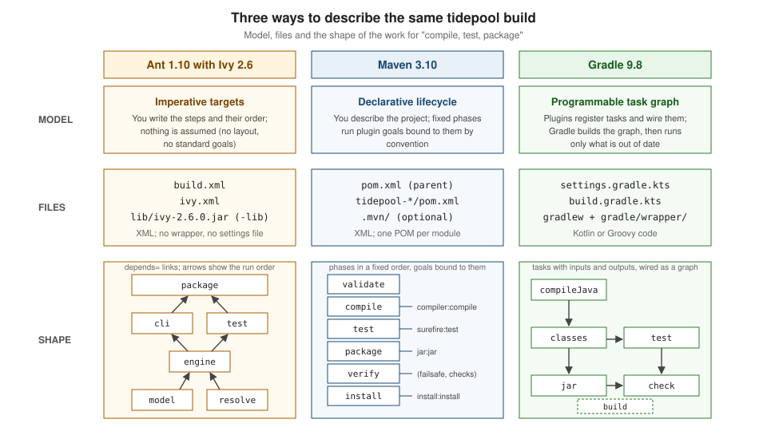

Comparing Ant, Maven & Gradle
|
This content was generated with the assistance of AI and should be verified against the official documentation before being relied on in production. |
This page is written against Apache Ant 1.10.18 with Apache Ivy 2.6.0, Apache Maven 3.10.0 (3.9.16 is the other maintained line) and Gradle 9.8.1, and every build file and command shown was run on JDK 26 on 2026-10-16. Maven 4 is still a release candidate (4.0.0-rc-7) and is mentioned only where it changes an answer. Where a number is a measurement it was taken on the machine named in the section that reports it, and is not a benchmark.
The three tools solve the same problem, turning source files and third-party libraries into tested artifacts, with three
different ideas of what a build file is. Ant gives you a scripting language for build steps and nothing else. Maven gives you a
fixed vocabulary of lifecycle phases and asks you to describe the project. Gradle gives you a programming model in which
plugins add tasks to a graph that it then executes selectively. The shared concepts are in
Build Automation Fundamentals and
Dependency Management Fundamentals; this
page puts the answers next to each other and then builds the running scenario, the tidepool toolkit (a model library, an
engine library that reads data/stations.csv, and a command line application), once with each tool. For the rest of the
section start at the section landing page.
Three models for the same job

The figure is the whole page in one picture. In Ant the unit is the target, a named list of tasks that declares what it
depends on. In Maven the unit is the phase of a lifecycle that exists before your project does; a plugin goal does the work
and a packaging type decides which goals are bound to which phase. In Gradle the unit is the task, which has declared inputs
and outputs, and the build is the graph formed by the dependencies that plugins and scripts put between tasks. The practical
consequences follow from that choice: Ant never assumes a directory layout, Maven assumes one and makes every project look the
same, and Gradle assumes one too but lets you change it with code.
Side by side
| Aspect | Ant 1.10.18 with Ivy 2.6.0 | Maven 3.10.0 | Gradle 9.8.1 |
|---|---|---|---|
Model |
Imperative targets: you write the steps and their order, and every convention is your own. |
Declarative: a lifecycle of phases and plugin goals bound to them by the packaging type. |
A task graph assembled by plugins and scripts, executed selectively. |
Build files |
|
|
|
Dependency management |
None in core Ant. Add Ivy 2.6.0 ( |
Built in: coordinates, scopes, a local repository and remote repositories, transitive dependencies resolved by Maven Resolver. |
Built in: configurations, variant-aware resolution, version catalogs, platforms and constraints. |
Conflict strategy |
Ivy conflict managers chosen in |
Nearest definition wins; at equal depth the first declaration wins. A version declared in your own POM always wins. |
By default the highest of all requested versions, adjustable with constraints, strict versions and resolution rules. |
Extensibility |
Tasks written in Java, scripting, |
Plugins (Java classes called mojos) and extensions, configured in the POM. |
Plugins and tasks written in Java, Kotlin or Groovy, convention plugins in |
Incremental build and caching |
Per task and by timestamp: |
Per plugin: the compiler plugin detects stale sources; the Build Cache Extension (1.3.0) and Maven Daemon add more. |
Built in: task inputs and outputs, the build cache and the configuration cache. |
Multi-module support |
By hand: |
|
|
Wrapper |
None. |
The Maven Wrapper ( |
Built in: |
IDE support |
The IDE runs targets; the classpath is configured separately. IvyDE, the Eclipse Ivy plugin, was retired on 2023-11-26. |
IDEs import the POM and keep the project model in sync with it. |
IDEs import the build through the Tooling API and keep the model in sync with it. |
Java needed to run |
JDK 8 or later for the Ant 1.10 line. |
Maven 3.10.0 and 3.9.16: Java 8. Maven 4.0.0-rc-7: Java 17. |
Gradle 9.8.1: a JVM between 17 and 27. The wrapper itself works on a JVM 8. |
Release cadence and support |
1.10.18 was released on 2026-09-06; the 1.9.x series was declared end of life on 2024-06-19. Ivy 2.6.0 dates from 2026-07. |
The team maintains the last version of the last two GA series, now 3.10.0 and 3.9.16; older versions are end of life. |
A minor release every six to seven weeks in 2026 (9.4.0 on 03-04, 9.5.0 on 04-28, 9.6.0 on 06-18, 9.7.0 on 08-06, 9.8.0 on 09-24), with patch releases on 9.x and on 8.14.x (8.14.6 on 10-08). |
The rows are explained in the sections that follow, with the build files and commands that prove them. The two cells most people underestimate are the conflict strategies and the incremental build. Nearest wins and highest wins give the same answer on a simple tree, and different answers as soon as a library appears at two depths; both are covered, with a reproduction, in Dependency Management Fundamentals. Source: Maven: introduction to the dependency mechanism, Gradle: version conflict resolution, Ivy: conflict managers, Maven: release history and support policy, Gradle: releases, Gradle: compatibility matrix, Ant: installing Ant.
Tidepool built three times
The scratch project is the same for every tool: tidepool-model (the records Station, Constituent, TideEvent and the
value type Height), tidepool-engine (depends on the model and on org.apache.commons:commons-csv:1.14.1, and has one
JUnit Jupiter test), and tidepool-cli (depends on the engine and on info.picocli:picocli:4.7.7). All three builds compile
with --release 21, run the test, and produce three JARs. Libraries come from Maven Central, so a first build downloads them;
every number in this page was taken with the local caches (~/.m2, ~/.ivy2 and ~/.gradle) already warm.
Ant and Ivy: build.xml and ivy.xml
The Ant build resolves with Ivy, defines a macrodef that compiles and packages one module, and chains the targets with
depends. The ivy.xml declares three configurations (engine, cli and test) and maps each to the default
configuration of the library it needs. Ivy is not part of Ant, so the JAR is passed with -lib.
<?xml version="1.0" encoding="UTF-8"?>
<project name="tidepool" default="package" basedir="."
xmlns:ivy="antlib:org.apache.ivy.ant">
<property name="release" value="21"/>
<property name="version" value="1.0.0"/>
<property name="build.dir" location="build"/>
<!-- compile, test and jar one module; the Ivy configuration names the external libraries -->
<macrodef name="module">
<attribute name="name"/>
<attribute name="classpathref"/>
<sequential>
<mkdir dir="${build.dir}/@{name}/classes"/>
<javac srcdir="@{name}/src/main/java" destdir="${build.dir}/@{name}/classes"
release="${release}" includeantruntime="false">
<classpath refid="@{classpathref}"/>
</javac>
<jar destfile="${build.dir}/@{name}/@{name}-${version}.jar"
basedir="${build.dir}/@{name}/classes"/>
</sequential>
</macrodef>
<target name="resolve" description="resolve the external libraries with Ivy">
<ivy:resolve/>
<ivy:cachepath conf="engine" pathid="engine.libs"/>
<ivy:cachepath conf="cli" pathid="cli.libs"/>
<ivy:cachepath conf="test" pathid="test.libs"/>
</target>
<target name="model" description="compile and package tidepool-model">
<path id="model.cp"/>
<module name="tidepool-model" classpathref="model.cp"/>
</target>
<target name="engine" depends="resolve,model" description="compile and package tidepool-engine">
<path id="engine.cp">
<pathelement location="${build.dir}/tidepool-model/classes"/>
<path refid="engine.libs"/>
</path>
<module name="tidepool-engine" classpathref="engine.cp"/>
</target>
<target name="cli" depends="engine" description="compile and package tidepool-cli">
<path id="cli.cp">
<pathelement location="${build.dir}/tidepool-engine/classes"/>
<pathelement location="${build.dir}/tidepool-model/classes"/>
<path refid="cli.libs"/>
</path>
<module name="tidepool-cli" classpathref="cli.cp"/>
</target>
<target name="test" depends="engine" description="run the engine tests with the JUnit launcher">
<path id="test.cp">
<pathelement location="${build.dir}/tidepool-engine/classes"/>
<path refid="engine.cp"/>
<path refid="test.libs"/>
</path>
<mkdir dir="${build.dir}/tidepool-engine/test-classes"/>
<mkdir dir="${build.dir}/tidepool-engine/test-reports"/>
<javac srcdir="tidepool-engine/src/test/java" destdir="${build.dir}/tidepool-engine/test-classes"
release="${release}" includeantruntime="false" classpathref="test.cp"/>
<junitlauncher haltOnFailure="true" printSummary="true">
<classpath>
<pathelement location="${build.dir}/tidepool-engine/test-classes"/>
<path refid="test.cp"/>
</classpath>
<testclasses outputdir="${build.dir}/tidepool-engine/test-reports">
<fileset dir="${build.dir}/tidepool-engine/test-classes" includes="**/*Test.class"/>
<listener type="legacy-plain" sendSysOut="true"/>
</testclasses>
</junitlauncher>
</target>
<target name="package" depends="cli,test" description="build all jars and run the tests"/>
<target name="clean" description="delete the build directory">
<delete dir="${build.dir}"/>
</target>
</project><ivy-module version="2.0">
<info organisation="io.tidepool" module="tidepool" revision="1.0.0"/>
<configurations>
<conf name="engine" description="libraries the engine needs at compile and run time"/>
<conf name="cli" extends="engine" description="engine libraries plus the command line parser"/>
<conf name="test" description="JUnit Jupiter and the launcher that runs it"/>
</configurations>
<dependencies>
<dependency org="org.apache.commons" name="commons-csv" rev="1.14.1" conf="engine->default"/>
<dependency org="info.picocli" name="picocli" rev="4.7.7" conf="cli->default"/>
<dependency org="org.junit.jupiter" name="junit-jupiter" rev="6.1.3" conf="test->default"/>
<dependency org="org.junit.platform" name="junit-platform-launcher" rev="6.1.3" conf="test->default"/>
</dependencies>
</ivy-module>ant -lib lib/ivy-2.6.0.jar clean packageOutput (the long found lines that Ivy prints for every module are omitted, and the scratch directory is shortened to
tidepool):
[ivy:resolve] :: resolution report :: resolve 102ms :: artifacts dl 5ms
---------------------------------------------------------------------
| | modules || artifacts |
| conf | number| search|dwnlded|evicted|| number|dwnlded|
---------------------------------------------------------------------
| engine | 3 | 0 | 0 | 0 || 3 | 0 |
| cli | 4 | 0 | 0 | 0 || 4 | 0 |
| test | 10 | 0 | 0 | 0 || 10 | 0 |
---------------------------------------------------------------------
model:
[mkdir] Created dir: tidepool/build/tidepool-model/classes
[javac] Compiling 4 source files to tidepool/build/tidepool-model/classes
[jar] Building jar: tidepool/build/tidepool-model/tidepool-model-1.0.0.jar
engine:
[mkdir] Created dir: tidepool/build/tidepool-engine/classes
[javac] Compiling 2 source files to tidepool/build/tidepool-engine/classes
[jar] Building jar: tidepool/build/tidepool-engine/tidepool-engine-1.0.0.jar
cli:
[mkdir] Created dir: tidepool/build/tidepool-cli/classes
[javac] Compiling 1 source file to tidepool/build/tidepool-cli/classes
[jar] Building jar: tidepool/build/tidepool-cli/tidepool-cli-1.0.0.jar
test:
[mkdir] Created dir: tidepool/build/tidepool-engine/test-classes
[mkdir] Created dir: tidepool/build/tidepool-engine/test-reports
[javac] Compiling 1 source file to tidepool/build/tidepool-engine/test-classes
[junitlauncher] Running io.tidepool.engine.TideEngineTest
[junitlauncher] Tests run: 1, Failures: 0, Aborted: 0, Skipped: 0, Time elapsed: 0,034 sec
package:
BUILD SUCCESSFUL
Total time: 0 secondsTwo details of this build are worth noting. A junitlauncher run fails with NoSuchFileException for a file named
TEST-io.tidepool.engine.TideEngineTest.txt if the outputdir does not exist yet, which is why the build creates
test-reports first; Ant does not create it for you. And the test uses the engine classes, so they have to be on the
compile classpath of the test sources as well, or javac reports cannot find symbol for StationReader. Both of these
were real failures while writing this page. The per-module classpaths, junitlauncher and the -lib mechanism are
detailed in Apache Ant.
Source: Ant: javac, Ant: jar, Ant: junitlauncher, Ant: macrodef, Ivy: resolve, Ivy: cachepath.
Maven: pom.xml
Maven needs four POMs: the parent, which holds the properties, the imported JUnit BOM and the pinned plugin versions, and one per module.
<?xml version="1.0" encoding="UTF-8"?>
<project xmlns="http://maven.apache.org/POM/4.0.0"
xmlns:xsi="http://www.w3.org/2001/XMLSchema-instance"
xsi:schemaLocation="http://maven.apache.org/POM/4.0.0 https://maven.apache.org/xsd/maven-4.0.0.xsd">
<modelVersion>4.0.0</modelVersion>
<groupId>io.tidepool</groupId>
<artifactId>tidepool</artifactId>
<version>1.0.0</version>
<packaging>pom</packaging>
<modules>
<module>tidepool-model</module>
<module>tidepool-engine</module>
<module>tidepool-cli</module>
</modules>
<properties>
<maven.compiler.release>21</maven.compiler.release>
<project.build.sourceEncoding>UTF-8</project.build.sourceEncoding>
<project.build.outputTimestamp>2026-01-01T00:00:00Z</project.build.outputTimestamp>
</properties>
<dependencyManagement>
<dependencies>
<dependency>
<groupId>org.junit</groupId>
<artifactId>junit-bom</artifactId>
<version>6.1.3</version>
<type>pom</type>
<scope>import</scope>
</dependency>
</dependencies>
</dependencyManagement>
<dependencies>
<dependency>
<groupId>org.junit.jupiter</groupId>
<artifactId>junit-jupiter</artifactId>
<scope>test</scope>
</dependency>
</dependencies>
<build>
<pluginManagement>
<plugins>
<plugin>
<artifactId>maven-compiler-plugin</artifactId>
<version>3.16.0</version>
</plugin>
<plugin>
<artifactId>maven-surefire-plugin</artifactId>
<version>3.6.0</version>
</plugin>
<plugin>
<artifactId>maven-jar-plugin</artifactId>
<version>3.5.1</version>
</plugin>
<plugin>
<artifactId>maven-resources-plugin</artifactId>
<version>3.5.0</version>
</plugin>
<plugin>
<artifactId>maven-clean-plugin</artifactId>
<version>3.5.0</version>
</plugin>
</plugins>
</pluginManagement>
</build>
</project><?xml version="1.0" encoding="UTF-8"?>
<project xmlns="http://maven.apache.org/POM/4.0.0"
xmlns:xsi="http://www.w3.org/2001/XMLSchema-instance"
xsi:schemaLocation="http://maven.apache.org/POM/4.0.0 https://maven.apache.org/xsd/maven-4.0.0.xsd">
<modelVersion>4.0.0</modelVersion>
<parent>
<groupId>io.tidepool</groupId>
<artifactId>tidepool</artifactId>
<version>1.0.0</version>
</parent>
<artifactId>tidepool-model</artifactId>
</project><?xml version="1.0" encoding="UTF-8"?>
<project xmlns="http://maven.apache.org/POM/4.0.0"
xmlns:xsi="http://www.w3.org/2001/XMLSchema-instance"
xsi:schemaLocation="http://maven.apache.org/POM/4.0.0 https://maven.apache.org/xsd/maven-4.0.0.xsd">
<modelVersion>4.0.0</modelVersion>
<parent>
<groupId>io.tidepool</groupId>
<artifactId>tidepool</artifactId>
<version>1.0.0</version>
</parent>
<artifactId>tidepool-engine</artifactId>
<dependencies>
<dependency>
<groupId>io.tidepool</groupId>
<artifactId>tidepool-model</artifactId>
<version>${project.version}</version>
</dependency>
<dependency>
<groupId>org.apache.commons</groupId>
<artifactId>commons-csv</artifactId>
<version>1.14.1</version>
</dependency>
</dependencies>
</project><?xml version="1.0" encoding="UTF-8"?>
<project xmlns="http://maven.apache.org/POM/4.0.0"
xmlns:xsi="http://www.w3.org/2001/XMLSchema-instance"
xsi:schemaLocation="http://maven.apache.org/POM/4.0.0 https://maven.apache.org/xsd/maven-4.0.0.xsd">
<modelVersion>4.0.0</modelVersion>
<parent>
<groupId>io.tidepool</groupId>
<artifactId>tidepool</artifactId>
<version>1.0.0</version>
</parent>
<artifactId>tidepool-cli</artifactId>
<dependencies>
<dependency>
<groupId>io.tidepool</groupId>
<artifactId>tidepool-engine</artifactId>
<version>${project.version}</version>
</dependency>
<dependency>
<groupId>info.picocli</groupId>
<artifactId>picocli</artifactId>
<version>4.7.7</version>
</dependency>
</dependencies>
<build>
<plugins>
<plugin>
<artifactId>maven-jar-plugin</artifactId>
<configuration>
<archive>
<manifest>
<mainClass>io.tidepool.cli.Main</mainClass>
</manifest>
</archive>
</configuration>
</plugin>
</plugins>
</build>
</project>mvn clean verifyOutput (excerpt: the lines that name the plugin goals, the test result, the JARs and the reactor summary):
[INFO] Building jar: tidepool/tidepool-model/target/tidepool-model-1.0.0.jar
[INFO] Tests run: 1, Failures: 0, Errors: 0, Skipped: 0, Time elapsed: 0.028 s -- in io.tidepool.engine.TideEngineTest
[INFO] Tests run: 1, Failures: 0, Errors: 0, Skipped: 0
[INFO] Building jar: tidepool/tidepool-engine/target/tidepool-engine-1.0.0.jar
[INFO] Building jar: tidepool/tidepool-cli/target/tidepool-cli-1.0.0.jar
[INFO] Reactor Summary for tidepool 1.0.0:
[INFO] tidepool ........................................... SUCCESS [ 0.074 s]
[INFO] BUILD SUCCESS
[INFO] Total time: 1.983 sThe Main-Class entry written by the maven-jar-plugin for tidepool-cli is only half of an executable JAR. Running the
JAR directly fails, and the reason is a classic one: the manifest has no Class-Path and the JAR contains no libraries.
java -jar tidepool-cli/target/tidepool-cli-1.0.0.jar data/stations.csv BOSException in thread "main" java.lang.NoClassDefFoundError: picocli/CommandLine
at io.tidepool.cli.Main.main(Main.java:36)
Caused by: java.lang.ClassNotFoundException: picocli.CommandLineMaven’s answers are a manifest Class-Path (addClasspath), the Shade or Assembly plugins for an uber JAR, or a plugin
that assembles a distribution; they are the subject of
Packaging JARs, WARs & Manifests and
Uber JARs with Shade & Assembly.
Gradle: build.gradle.kts
The whole build is one settings file and one build script. The scripts apply the java-library plugin to every module and
declare the dependencies of each module from the root script. A real project would put these blocks in the module’s own
build.gradle.kts or in a convention plugin; one script keeps the comparison on a page. Because the plugins are applied from
inside the script, the type-safe accessors are not available and the configurations are named by string, such as
"implementation"(...).
subprojects {
apply(plugin = "java-library")
repositories {
mavenCentral()
}
group = "io.tidepool"
version = "1.0.0"
tasks.withType<JavaCompile> {
options.release = 21
}
dependencies {
"testImplementation"(platform("org.junit:junit-bom:6.1.3"))
"testImplementation"("org.junit.jupiter:junit-jupiter")
"testRuntimeOnly"("org.junit.platform:junit-platform-launcher")
}
tasks.withType<Test> {
useJUnitPlatform()
}
}
project(":tidepool-engine") {
dependencies {
"api"(project(":tidepool-model"))
"implementation"("org.apache.commons:commons-csv:1.14.1")
}
}
project(":tidepool-cli") {
apply(plugin = "application")
dependencies {
"implementation"(project(":tidepool-engine"))
"implementation"("info.picocli:picocli:4.7.7")
}
extensions.configure<JavaApplication> {
mainClass = "io.tidepool.cli.Main"
}
}rootProject.name = "tidepool"
include("tidepool-model", "tidepool-engine", "tidepool-cli")subprojects {
apply plugin: 'java-library'
repositories {
mavenCentral()
}
group = 'io.tidepool'
version = '1.0.0'
tasks.withType(JavaCompile).configureEach {
options.release = 21
}
dependencies {
testImplementation platform('org.junit:junit-bom:6.1.3')
testImplementation 'org.junit.jupiter:junit-jupiter'
testRuntimeOnly 'org.junit.platform:junit-platform-launcher'
}
tasks.withType(Test).configureEach {
useJUnitPlatform()
}
}
project(':tidepool-engine') {
dependencies {
api project(':tidepool-model')
implementation 'org.apache.commons:commons-csv:1.14.1'
}
}
project(':tidepool-cli') {
apply plugin: 'application'
dependencies {
implementation project(':tidepool-engine')
implementation 'info.picocli:picocli:4.7.7'
}
application {
mainClass = 'io.tidepool.cli.Main'
}
}rootProject.name = 'tidepool'
include 'tidepool-model', 'tidepool-engine', 'tidepool-cli'./gradlew clean buildOutput of the Kotlin DSL build (--no-daemon, the scratch directory shortened):
> Task :tidepool-cli:clean
> Task :tidepool-engine:clean
> Task :tidepool-model:clean
> Task :tidepool-model:compileJava
> Task :tidepool-engine:compileJava
> Task :tidepool-cli:compileJava
> Task :tidepool-cli:processResources NO-SOURCE
> Task :tidepool-cli:classes
> Task :tidepool-cli:jar
> Task :tidepool-engine:processResources NO-SOURCE
> Task :tidepool-engine:classes
> Task :tidepool-engine:jar
> Task :tidepool-model:processResources NO-SOURCE
> Task :tidepool-model:classes
> Task :tidepool-model:jar
> Task :tidepool-cli:startScripts
> Task :tidepool-cli:distTar
> Task :tidepool-cli:distZip
> Task :tidepool-cli:assemble
> Task :tidepool-cli:compileTestJava NO-SOURCE
> Task :tidepool-cli:processTestResources NO-SOURCE
> Task :tidepool-cli:testClasses UP-TO-DATE
> Task :tidepool-cli:test NO-SOURCE
> Task :tidepool-cli:check UP-TO-DATE
> Task :tidepool-cli:build
> Task :tidepool-engine:assemble
> Task :tidepool-engine:compileTestJava
> Task :tidepool-engine:processTestResources NO-SOURCE
> Task :tidepool-engine:testClasses
> Task :tidepool-engine:test
> Task :tidepool-engine:check
> Task :tidepool-engine:build
> Task :tidepool-model:assemble
> Task :tidepool-model:compileTestJava NO-SOURCE
> Task :tidepool-model:processTestResources NO-SOURCE
> Task :tidepool-model:testClasses UP-TO-DATE
> Task :tidepool-model:test NO-SOURCE
> Task :tidepool-model:check UP-TO-DATE
> Task :tidepool-model:build
BUILD SUCCESSFUL in 4s
14 actionable tasks: 14 executed
Consider enabling configuration cache to speed up this build: https://docs.gradle.org/9.8.1/userguide/configuration_cache_enabling.htmlThe Groovy DSL variant was built the same way in a second scratch copy and produced the same three JARs and the same test
result. Gradle builds and distributes the application too, which Maven needed a plugin for. The application plugin adds
run, installDist, distZip and distTar, and the start script it generates carries the full runtime classpath
(lib/ holds the model, engine, Commons CSV, Commons IO, Commons Codec and picocli JARs):
./gradlew -q :tidepool-cli:run --args="../data/stations.csv BOS"
./gradlew -q installDist
tidepool-cli/build/install/tidepool-cli/bin/tidepool-cli data/stations.csv HNLBoston: -0,662 m
Honolulu: -0,112 mThe decimal comma comes from the locale of the machine that ran the example. A second ./gradlew build with nothing changed
reports 11 actionable tasks: 11 up-to-date: Gradle compares the inputs and outputs of every task and runs nothing. Ant and
Maven both ran their tests again in the same situation, as the timings below show.
The same dependency graph, three views
All three tools resolve the same graph for tidepool-cli. Maven prints it with the dependency plugin (3.11.0) and -am so
that the modules the CLI depends on are in the reactor:
mvn org.apache.maven.plugins:maven-dependency-plugin:3.11.0:tree -Dscope=runtime -pl tidepool-cli -am[INFO] io.tidepool:tidepool-cli:jar:1.0.0
[INFO] +- io.tidepool:tidepool-engine:jar:1.0.0:compile
[INFO] | +- io.tidepool:tidepool-model:jar:1.0.0:compile
[INFO] | \- org.apache.commons:commons-csv:jar:1.14.1:compile
[INFO] | +- commons-io:commons-io:jar:2.20.0:compile
[INFO] | \- commons-codec:commons-codec:jar:1.19.0:compile
[INFO] \- info.picocli:picocli:jar:4.7.7:compile./gradlew -q :tidepool-cli:dependencies --configuration runtimeClasspathruntimeClasspath - Runtime classpath of source set 'main'.
+--- project ':tidepool-engine'
| +--- project ':tidepool-model'
| \--- org.apache.commons:commons-csv:1.14.1
| +--- commons-io:commons-io:2.20.0
| \--- commons-codec:commons-codec:1.19.0
\--- info.picocli:picocli:4.7.7The Ivy resolution report above shows the cli configuration with four modules (picocli plus the three that Commons CSV
brings), as the graph says. The tools differ in the other direction, the compile classpath. The engine declares
Commons CSV with implementation in Gradle, so it is not on the compile classpath of its consumers:
./gradlew -q :tidepool-cli:dependencies --configuration compileClasspathcompileClasspath - Compile classpath for source set 'main'.
+--- project ':tidepool-engine'
| \--- project ':tidepool-model'
\--- info.picocli:picocli:4.7.7In Maven the same dependency has compile scope, which is a single scope for both compiling and running, so Commons CSV is
visible to the CLI’s compiler and can be used there by accident. This is the reason Gradle has api and implementation
(api is what Maven’s compile implies) and Ivy has configurations, which are whatever you define. The mapping table below
lists them.
Commands and timings
The build was timed on an Apple M5 running macOS 27.0.1 with JDK 26 (26+35), Ant 1.10.18, Maven 3.10.0 and Gradle 9.8.1, on
2026-10-16, with output discarded and warm dependency caches. Each figure is the wall-clock time of the whole command,
including starting the JVM, rounded to 0.1 s. Ant and Maven were run with -q; the Gradle runs are without a build cache.
| Command | Ant with Ivy | Maven | Gradle (no daemon) | Gradle (warm daemon) |
|---|---|---|---|---|
Clean, compile, test and package: |
0.9, 0.8, 0.9 s |
2.8, 3.2, 2.7 s |
4.9, 4.9, 3.9 s |
1.9, 1.4, 1.2 s |
The same build without |
0.8, 0.9 s (compiles and packages nothing, runs the test again) |
1.6, 2.4 s (compiles nothing, runs the test again) |
not measured |
0.4, 0.3 s (every task up to date) |
The numbers come from a project with about a dozen source files, so they measure start-up and tool overhead and say nothing about a large build: Ant starts the quickest because it does the least, and Gradle’s daemon (a long-lived JVM that keeps the build state warm) pays for its start when it is not reused. The figures that matter on a large project are the second row and the up-to-date checks it implies, which is where Gradle’s task model and its caches earn their cost; they are described in Incremental Build, Build Cache and Build Performance: Cache, Parallel & mvnd.
The same ideas in each tool
| Concept | Ant and Ivy | Maven | Gradle |
|---|---|---|---|
A unit of work |
A task inside a target, such as |
A plugin goal, such as |
A task, such as |
A named stage you run |
A target, such as |
A phase, such as |
A lifecycle task, such as |
Order between stages |
|
The fixed lifecycle; plugins choose a phase for each goal |
Task dependencies, |
Libraries needed to compile |
An Ivy configuration, or a path you define |
Scope |
|
Libraries needed only at run time |
An Ivy configuration |
Scope |
|
Libraries needed only by tests |
The |
Scope |
|
Shared versions |
Properties, or an Ivy |
|
Version catalogs, platforms and constraints |
Shared build logic |
|
A parent POM and plugin management |
A convention plugin in |
Module list |
Targets that call |
|
|
Run the application |
|
A plugin such as |
|
Each row has its own page: Ant targets, the Maven lifecycle, the Gradle build lifecycle, Maven scopes, Gradle configurations, Ivy configurations, version catalogs and convention plugins.
Choosing a tool
Choose by what you have and what you need to do, not by fashion. The flow below is the one the sections after it justify.
Reasons for each tool
Maven is the right default when the project is a standard JVM library, service or web application and the team values a
build that looks the same in every repository. The POM is data, so IDEs, scanners and repository managers can read it without
running anything; the lifecycle makes mvn verify mean the same thing everywhere; and the plugin and BOM ecosystem is the
widest, as is the amount of existing documentation. Its costs are that logic that does not fit a phase and a goal is awkward,
and that a large reactor has no task-level up-to-date checking without the build cache extension.
Gradle is the right choice when the build has real logic, many modules, several languages (Kotlin, Android, native), or a size at which incremental builds, the build cache and the configuration cache pay for themselves. The build is code, which makes it flexible, and a build written without discipline is also harder to read and slower to configure than a POM. Its costs are a steeper learning curve, a DSL (Kotlin or Groovy) to learn, and a larger surface for build behaviour to depend on the Gradle version, mitigated by the wrapper.
Ant is the right choice when the job is to run steps rather than to model a project: packaging for an environment that already has its own conventions, driving other tools, or a legacy build you want to keep stable. It never changes what you did not ask it to change, it needs no plugin to do something new, and it runs on JDK 8 and later. Its costs are that every convention is yours to write and maintain, and that dependency management is a separate decision (Ivy or the Maven Resolver Ant Tasks), which is why a new build that needs dependencies is rarely best served by it.
Keeping an existing Ant or Maven build
A working build is an asset. Rewriting an Ant build in Maven or Gradle changes how every developer and every pipeline runs
the product, so it needs a reason: a dependency problem that Ivy cannot solve, a need for a wrapper and reproducible
environments, or builds slower than the team can tolerate. If there is no such reason, keep it, and keep it healthy: Ant
1.10.18 fixed a path traversal vulnerability in the ftp and scp tasks, so the version in use matters, and the 1.9.x series
is end of life. The same applies to a Maven build on a version older than 3.9, which is also end of life. The upgrade paths
are in Ant versions & release history,
Maven versions & release history and
upgrading Gradle, and the steps for a real move are in
Migrating Between Tools.
Mixed estates
Real organisations run all three at once, and the tools can cooperate. Libraries published by one tool are consumed by the
others through a repository, because the repository formats are shared; that is the subject of
Repositories & Publishing Across Tools.
Inside one build, Gradle can import an Ant build and turn every Ant target into a Gradle task, which is the first step of the
gradual migration described in the Gradle documentation. The run below is the tidepool build.xml imported unchanged except
for one line, a taskdef that loads Ivy from lib/ivy-2.6.0.jar because Gradle’s embedded Ant does not read the -lib
option of the ant command:
<taskdef resource="org/apache/ivy/ant/antlib.xml" uri="antlib:org.apache.ivy.ant"
classpath="${basedir}/lib/ivy-2.6.0.jar"/>ant.importBuild("build.xml")./gradlew --no-daemon clean cli> Task :clean
> Task :resolve
> Task :model
> Task :engine
> Task :cli
BUILD SUCCESSFUL in 2s
5 actionable tasks: 5 executedThe Ant targets resolve, model, engine and cli run as Gradle tasks, in the order their depends attributes give, and
the three JARs are built. Without that taskdef, the first run fails in :resolve with the messages failed to create task or type
antlib:org.apache.ivy.ant:resolve and The name is undefined. The test target did not run in this build: Gradle 9.8.1 bundles Ant 1.10.17 and its
embedded Ant does not include the optional ant-junitlauncher component, so ./gradlew package stops in :test with
failed to create task or type junitlauncher and a note that JUnitLauncherTask was not found. A real import therefore has to
give Gradle’s Ant that JAR, or replace the Ant test target with a native Gradle Test task, which is the "task by task"
migration the Gradle documentation describes. Neither was run here. The opposite direction, calling Ant from Maven with the
maven-antrun-plugin, is covered in the migration page and was not run for this comparison.
What to read next
-
Build Automation Fundamentals for the history and the model behind the three tools.
-
Migrating Between Tools for moving a build from one to another.
-
CI & IDE Integration for running all three in pipelines and IDEs.
-
Cheat Sheet for the commands side by side.
-
Java: Build & Tooling and Kotlin: Build & Tooling for the language-specific view.